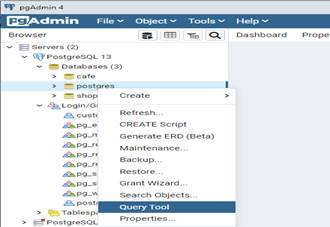

Практическая работа №1: Создание базы данных с использованием приложения pgAdmin
Цель практической работы:закрепление и расширение знаний, полученных обучающихся при теоретическом изучении предмета, приобретение конкретных практических навыков создания базы данных.
Методические указания к выполнению работы:
В таблице базы данных хранится информация о ценах (дата, название магазина, название продукта, цена, примечание).
Структура таблицы prices, приведена в таблице.
Таблица1 – Структура таблицы prices базы данных
| column_name | is_nullable | data_type | character_maximum_length |
| id | NO | bigint | |
| datep | NO | timestamp with time zone | |
| store | NO | character varying | 128 |
| product | NO | character varying | 256 |
| cost | NO | numeric | |
| details | YES | text |
Создание базы данных, таблиц базы данных и заполнение их начальными данными.
Имеется три варианта создания и заполнения таблицы:
· Вручную с использованием приложения pgAdmin (входит в пакет PostgreSQL).
· Модель данных и миграция данных.
· С использованием языка программирования Python Django
pgAdmin
Создать новую БД в pgAdmin можно двумя способами. Первый способ заключается в использовании графического интерфейса.
В левой части программы необходимо выбрать «Databases» путем нажатия на данную команду. Далее нужно выбрать команды «Create» и «Database» (рисунок 1).
Рисунок 1 – Окно создания базы данных в pgAdmin
Затем необходимо заполнить предложенную форму: название и имя владельца БД, при этом остальные параметры можно не менять. Далее выбираем команду «Save» (рисунок 2).
Рисунок 2 – Окно создания параметров БД
Новая БД должна отобразиться в левой части программы (в случае необходимости нужно будет обновить данные), как видно на рисунке 3.
Рисунок 3 – Окно отображения созданной БД
Также базу данных можно создать вручную, выполнив команду SQL. Для этого в левой части программы нужно выбрать определенную базу данных, например, стандартную БД postgres, и в появившемся меню выбрать пункт Query Tool, как показано на рисунке 4.

Рисунок 4 – Окно создания БД посредством команды SQL
В центральной части программы откроется поле для ввода кода SQL, в которое нужно ввести следующую команду SQL.
CREATE DATABASE price
WITH
OWNER = customer
ENCODING = 'UTF8'
CONNECTION LIMIT = -1;
Далее выбрать команду «Execute/Refresh (F5)». Результат выполнения команды отразится в нижней части программы (рисунок 5).
Рисунок 5 – Окно кода создания БД
Создать таблицу БД в pgAdmin можно также двумя способами. Первый способ предполагает использование графического интерфейса.
Для этого, прежде всего, необходимо выбрать в pgAdmin целевую базу данных «price», раскрыть узел «Schemas», выделить узел «Tables». Далее нужно выбрать «Create» и «Table» (рисунок 6).

Рисунок 6 – Окно создания таблицы БД
Затем необходимо заполнить предложенные формы и выбрать команду «Save», как показано на рисунке 7.
Рисунок 7 – Окно задания параметров таблицы БД
Второй способ заключается в выполнении команды SQL. Для этого вначале нужно выбрать в pgAdmin целевую БД «price», нажать на нее и в контекстном меню выбрать пункт Query Tool (рисунок 8).
Рисунок 8 – Окно создания таблицы БД посредством команды SQL
В центральной части программы откроется поле для ввода кода SQL, в которое нужно ввести команду SQL
CREATE TABLE public.prices
(
id bigint NOT NULL GENERATED BY DEFAULT AS IDENTITY ( INCREMENT 1 START 1 MINVALUE 1 MAXVALUE 9223372036854775807 CACHE 1 ),
datep timestamp with time zone NOT NULL,
store character varying(128) COLLATE pg_catalog."default" NOT NULL,
product character varying(256) COLLATE pg_catalog."default" NOT NULL,
cost numeric(6,2) NOT NULL,
details text COLLATE pg_catalog."default",
CONSTRAINT prices_pkey PRIMARY KEY (id)
)
Далее нажать на кнопку «Execute/Refresh (F5)». Результат выполнения отразится в нижней части программы (рисунок 9).
Рисунок 9 – Окно заполнения таблицы БД посредством команды SQL
Задание:
Создать базу данных в соответствии с вариантом.
1. Создание БД "Страховая компания".
Таблицы:
- Вид страхования (код, наименование).
- Контракты (номер, дата, сумма, тарифная ставка, код филиала, код вида страхования).
- Филиал (код филиала, наименование, телефон, адрес).
2. Создание БД "Гостиница".
Таблицы:
- Клиенты (код клиента, фамилия, имя, отчество, паспортная информация).
- Номера (код, номер, количество человек, цена, комфорт).
- Размещение (код размещения, код клиента, код комнаты, дата размещения, дата выезда).
3. Создание БД "Ломбард".
Таблицы:
- Клиенты (код клиента, имя, фамилия, отчество, удостоверение личности, срок выдачи документа).
- Категория товара (код, наименование категории товара).
- Реализация в ломбард (код, код товарной категории, код клиента, описание товара, срок реализации, срок возврата, сумма, комиссионная плата).
4. Создание БД "Агентство по трудоустройству".
Таблицы:
- Работодатель (код работодателя, наименование, вид деятельности, телефон, адрес).
- Договора (код соискателя, код работодателя, вид деятельности, комиссионная плата).
- Соискатели (код соискателя, фамилия, имя, отчество, квалификация, вид деятельности, другие сведения, сумма оплаты труда).
5. Создание БД "Распределение учебной нагрузки».
Таблицы:
- Преподаватели (код преподавателя, фамилия, имя, отчество, должность, ученая степень, стаж работы).
- Дисциплины (код, наименование дисциплины, количество часов).
- Нагрузка (код преподавателя, код дисциплины, номер группы).
6. Создание БД "Грузоперевозки".
Таблицы:
- Направления (код маршрута, название, оплата труда, расстояние).
- Водители (код водителя, фамилия, имя, отчество, стаж работы).
- Проделанная работа (код маршрута, код водителя, дата отправления, дата возвращения).
7. Создание БД «Прокат автомобилей».
Таблицы:
- Автомобили (код автомобиля, марка, цена, цена аренды, тип).
- Клиенты (код клиента, фамилия, имя, отчество, телефон, адрес).
- Выданные автомобили (код автомобиля, код клиента, дата выдачи, дата возврата).
8. Создание БД "Интернет-магазин".
Таблицы:
- Товары (код товара, наименование, цена, единица измерения).
- Клиенты (код клиента, фамилия, имя, отчество, телефон, адрес, e-mail, постоянный потребитель).
- Продажа (код продажи, код товара, код клиента, количество, дата продажи, дата доставки).
9. Создание БД "Ювелирная мастерская".
Таблицы:
- Ювелирное изделие (код ювелирного изделия, наименование, вид, код материала, вес, цена).
- Материалы (код материала, наименование, цена за грамм).
Контрольные вопросы:
1. Способы создания новой БД в pgAdmin
2. Способы создания новой БД посредством команды SQL
3. Для чего служит пункт Query Tool контекстного меню?